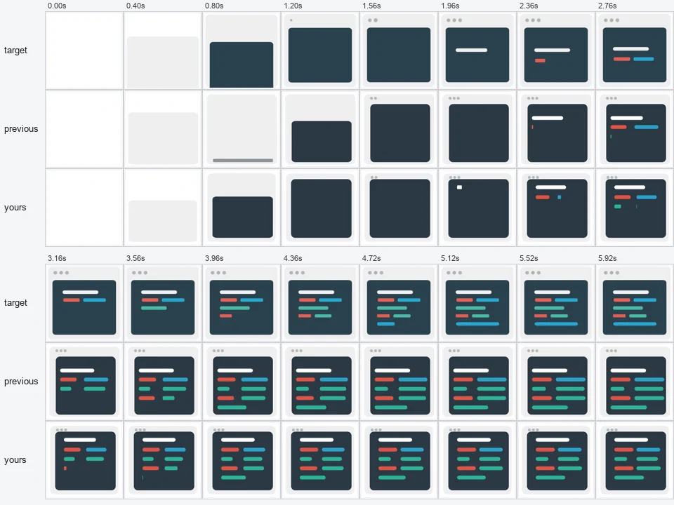
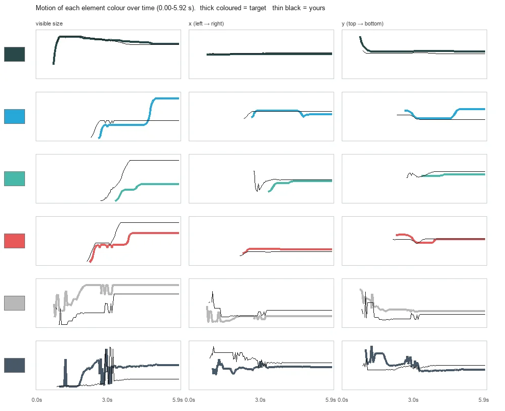
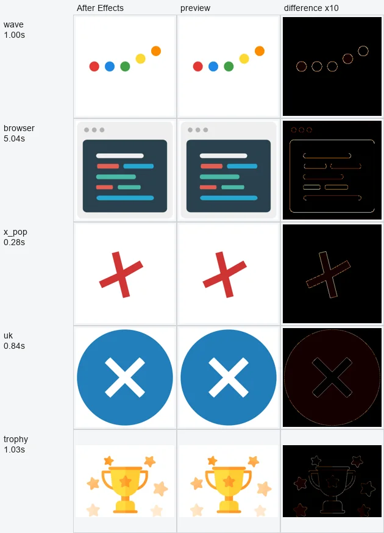

主 Agent 只拿到参考动效的画面，写出一份能编译回 After Effects 的 Lottie 动画。另一个独立的检查 Agent（同一个模型、全新会话）只看画面，告诉它哪里不像、差在哪段时间。整个闭环里没有分数。
左边是 After Effects 渲染的目标，右边是 Agent 交付的动画。画面同步播放，打开时停在最后一帧，每轮在最后一帧停 1.5 秒。模型是 DeepSeek V4.1 Flash，经 Devin 客户端调用，禁用全部工具。三个结果是从同一框架的多次运行里挑出来的；浏览器窗口用的是当前代码，奖杯和叉号跑在加入“自动完整检查”之前。
set_ir 整体写入，或用 patch_ir（JSON Patch）局部修改。/layers/3/ks/p。preview 给出 目标 / 当前 / 差异热图。Agent 写的是 Lottie 的一个子集：形状图层、路径、填充描边、嵌套组、图层变换关键帧和三次缓动。每一项都在 AE 里逐项验证过，构建器把 Lottie 缓动精确换算成 AE 的 speed / influence。
早期版本把像素指标、形状指标当作闭环反馈，Agent 会去优化指标本身：画面明显不对，分数依然很高。现在的反馈全部来自画面，检查 Agent 看不到 IR、看不到主 Agent 的对话，也没有分数可看。
客户端以 Ask 模式启动、禁用全部内置工具，模型只能在回复里写 JSON 动作。主 Agent 一旦发起工具调用，这次运行作废；检查 Agent 调工具或把工具调用写成文本，就换一个新会话重答。

Yours is closer to the target than previous: the card now goes dark and scales to full size by 1.20s … CHANGE: better
1. Skeleton rows appear too early — 1.96s–2.76s … Target adds one row per ~0.4s and finishes ~4.0s.

Coloured text bars … yours runs ~0.12–0.24 s ahead. Motion chart confirms: yours' (thin black) blue/teal/red visible-size curves start rising ~0.2–0.3 s before target's thick curves.
只画出了圆点和几根贴边的细条。
yours never draws the card at all … target grows a dark navy rounded rect from ~0.80s
按快检意见补出面板、标题条和代码条。快检判断变好，但代码条出得太早。
Skeleton rows appear too early … Target adds one row per ~0.4s
第 12 步自动完整检查。检查 Agent 先请求放大 1.00–2.00 s 逐帧看，再结合运动曲线指出面板淡入和代码条的时间问题。
yours starts ~0.2 s too early and darkens too gradually … coloured text bars: yours runs ~0.12–0.24 s ahead
之后全部用 patch_ir 小步修改：标题条和第一行代码条的出现时间对上目标，后面几行的节奏放慢、更接近目标。第 23 步交付。
迭代全靠预览，前提是预览和 AE 画出来的一样。lottie-web 和 AE 对同一份 Lottie 的求值并不完全相同：比如位置动画的空间切线与运动方向共线时，lottie-web 会丢掉切线、改成逐维插值，AE 始终沿空间曲线按弧长推进，遇到回弹、过冲就画得不一样。预览前把这类段的出切线沿法向推开 0.01 px，送进 AE 的动画不变；奖杯最差一帧的平均差从 0.77 降到 0.17（/255）。
| 参考答案 | 帧数 | 单帧平均差 最大 | 中位 | 差异 >40 的像素 最多 |
|---|---|---|---|---|
| 加载波浪 | 40 | 0.10 | 0.10 | 0.10% |
| 浏览器窗口 | 149 | 0.34 | 0.28 | 0.06% |
| 叉号弹出 | 120 | 0.15 | 0.11 | 0.11% |
| 圆形旗帜 | 69 | 0.82 | 0.51 | 0.37% |
| 奖杯 | 60 | 0.17 | 0.09 | 0.27% |
像素差按 0–255 计。参考答案在预览里渲染，与 AE 26 渲染的参考帧逐帧比较。
另有 47 个由模型写出、交付后编译进 AE 的动画（4111 帧）：每个动画的平均差中位数 0.13，最大 0.62；最差的单帧 1.3，差异超过 40 的像素最多占 0.67%。
这些是这几个任务上的观测结果，不是任意动画都等价的证明。

set_ir 重写，检查之后才转成按意见 patch_ir。